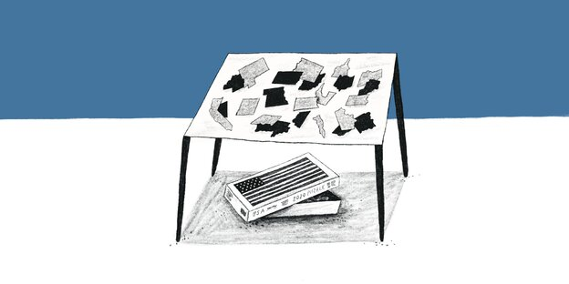

Am Samstag trafen sich die verschwörungsideologischen „Querdenker“ in Frankfurt. Die Polizei ging gewaltsam gegen GegendemonstrantInnen vor.

Warum gibt es bei 11.000 Corona-Toten einen Lockdown, während 25.000 Grippe-Opfer und 30.000 Sterbefälle durch Raucherkrebs in Kauf genommen werden?
Peking beschließt einen Pakt mit den großen Wirtschaftsnationen der Asien-Pazifik-Region. Die Gemeinschaft will bald auch Europa überholen.
Das erste Coronaweihnachten könnte ganz anders werden als gewohnt. Das muss kein Drama sein, findet unsere Autorin.
Schulen dicht, Ausgangsbeschränkungen rund um die Uhr – die österreichische Regierung plant neue Corona-Maßnahmen. Merkel appelliert weiter an die Vernunft.
Bundesfamilienministerin Franziska Giffey kommt einer Aberkennung ihres Titels zuvor. Ein konsequenter Schritt, der für sie spricht.
Ein ehemaliger Angehöriger der Sicherheitskräfte stirbt durch einen brutalen Polizeieinsatz gegen die Opposition. Tausende gehen auf die Straße.
 Kolumne Macht
Kolumne Macht In die Kommentierung der Wahl in den USA hat sich ein Ton eingeschlichen, der unserer Autorin missfällt. Eine Ermahnung – auch an Joe Biden.
Herr Innenminister, haben Sie bei einem Ex-Nordkreuz-Mitglied eine Waffe erworben? Seit neun Monaten versuchen wir, eine Antwort zu bekommen.
Ein Vorstoß der Deutschen Bank, Abgaben auf das Homeoffice einzuführen, sorgt für Verwunderung und Spott. Erwartete Einnahmen: 15,9 Milliarden Euro.
Die mediale Euphorie über die erste US-Vizepräsidentin Kamala Harris muss man auch als schwarze Frau nicht teilen. Sie steht nicht für Veränderung.
Tausende versuchen bis heute, einen Umgang mit dem Trauma zu finden. Präsident Emmanuel Macron will härter gegen Gefährder durchgreifen
Auch nach sechs Stunden Ausschuss-Sondersitzung überwiegen die Differenzen zu den „Querdenken“-Protesten in Leipzig. In der Koalition kriselt es.
Im Prinzip läuft vieles richtig beim Schulbetrieb in der Pandemie. Manchen Ländern fällt es aber schwer, Entscheidungen der Ämter zu respektieren.
Laut einem Bericht deutscher Diplomaten lehnen vor allem die Mitgliedstaaten an den Außengrenzen die Vorschläge der EU-Kommission ab.

Walter Frankenstein träumt wieder von der Verfolgung. Bella Szwarcman-Czarnota hat Angst. Überlebende des Holocausts trifft die Pandemie doppelt.
Österreichs Kanzler Kurz will den Straftatbestand „politischer Islam“ einführen – und damit vor allem das eigene eklatante Versagen überspielen.
Ein Marsch nationalistischer Gruppen in Warschau artet zu einer Schlacht aus. Mehr als 300 Menschen werden festgenommen und zahlreiche verletzt.
Die Rodungen im Wald kommen nur langsam voran. Erste Schneisen sind geschlagen. Die Besetzer*innen wollen stärker mit „spontanen Aktionen“ stören.
Die konservative Presse jubelt über eine Studie, die nun die viel diskutierte Cancel Culture belegen soll. Doch es gibt da ein kleines Problem.
Netzpolitikerin Anke Domscheit-Berg (Linke) erklärt, was aus ihrer Sicht bei der Corona-App schiefläuft – und welche neuen Funktionen sinnvoll wären.
Nach dem Rauswurf oppositioneller Parlamentarier haben prodemokratische Abgeordnete geschlossen das Parlament in Hongkong verlassen.
12 Neonazis sollen Anschläge auf Moscheen und Politiker geplant haben. Nun liegt die Anklage vor. Beschuldigt sind auch ein Polizist und ein Spitzel.

Studierende der Hertie School fordern Aufarbeitung der Nazi-Vergangenheit der ehemaligen Kaufhauskette Hermann Tietz. Der Konzern wurde „arisiert“.
Das vorläufige Ende der Trump-Ära hat uns eine geschichtliche Atempause verschafft. Die müssen wir nutzen, um zu verstehen, was da geschah.
Peter W. stand im Verdacht, den Ex-KSK-Soldaten André S. vor Durchsuchungen gewarnt zu haben. Jetzt zog die Staatsanwaltschaft ihre Berufung zurück.
Der IS ist geschwächt, aber nicht besiegt. Seine Ideologie lebt weiter. Und weltweit sollen rund 20.000 Kämpfer zum Einsatz bereitstehen.
Der mutmaßliche Halle-Attentäter verbrachte viel Zeit im Netz – und fand dort wohl Gleichgesinnte. Die Aussage einer Expertin stellt die Polizei bloß.
Erneut ist ein Flug mit Geflüchteten aus griechischen Lagern in Hannover gelandet. Deutschland hatte die Aufnahme von 1.553 Menschen zugesagt.
Zehntausende Menschen flüchten über das Meer in die Küstenstadt Pemba. Manche überleben die Reise nicht. Doch zu Hause bleiben ist keine Option.
Mehr als 400 Migranten sind auf der Seeroute von Afrika zu den Kanaren in diesem Jahr gestorben – doppelt so viele Tote wie im gesamten Jahr 2019.
Ein Brand im Flüchtlingslager auf der Insel Samos hat mehrere Zelte zerstört. Aber auch ohne Feuer ist es ein gefährlicher Ort für die Bewohner*innen.
Vier Menschen sind bei ihrer Überfahrt im Meer ertrunken, darunter zwei Kinder. Über 7.000 Menschen kamen 2020 auf Booten nach Großbritannien.
Almuth Schult hat mit schweren Verletzungen bei der WM gespielt – auf eigenes Risiko. Was der DFB darüber wusste, kann auch eine TV-Doku nicht klären.
Bundestrainerin Martina Voss-Tecklenburg präsentiert ihre Analyse vom Versagen des deutschen Teams bei der Frauenfußball-Weltmeisterschaft.
In den USA liegt ein Gesetzentwurf zum Equal Pay vor: Gelder für die Männer-Fußball-WM 2026 nur, wenn Frauen gleich bezahlt werden.
Co-Kapitänin Megan Rapinoe appelliert an ihre Fans, Verantwortung für eine bessere Welt zu übernehmen. An Trump sendet sie eine besondere Botschaft.
Das US-Team hat diese WM dominiert – spielerisch, personell, diskursiv. Am Ende reckt es völlig zu Recht den Pokal in die Höhe.
Kurdische Zivilisten werden aus dem Helikopter gestoßen. Journalisten, die darüber berichten, sind kriminell. Und die Ärztekammer? Voller „Verräter“.
Nach 46 Jahren soll die Stadt Varosha im türkischen Norden von Zypern wieder geöffnet werden. Griechische Zyprer und die EU protestieren.
Überraschend wurde Hozan Cane aus türkischer U-Haft entlassen. Jetzt sitzt die Deutsche zusammen mit ihrer Tochter in Istanbul fest.
„Nahezu vollständig gleichgeschaltete“ Medien und eine „dysfunktionale“ Justiz: Der Lagebericht des Auswärtigen Amts zur Türkei fällt extrem negativ aus.
Türkische Behörden haben Dutzende Haftbefehle gegen kurdische HDP-Mitglieder ausgestellt. Ein alter Konflikt wird neu aufgelegt.
Biden wird die Spaltung nicht überwinden, denn weder Republikaner noch Demokraten wollen das. Das ist vielleicht auch okay.
US-Behörden weisen den Vorwurf des Wahlbetrugs von Trump entschieden zurück. Biden gewinnt in Arizona, Trump erkennt seine Niederlage weiter nicht an.
Schon länger gab es Spannungen zwischen US-Verteidigungsminister Mark Esper und Donald Trump. Jetzt hat ihn der scheidende Präsident gefeuert.
Bislang sind die Anwälte von US-Präsident Donald Trump vor Gericht komplett gescheitert. Republikaner*innen fällt es dennoch schwer, sich abzugrenzen.
Eine Neuauszählung der Stimmzettel würde am Ergebnis wohl nichts ändern. Aber ohne eine Einigung könnten Parlamente selbst Wahlleute benennen.